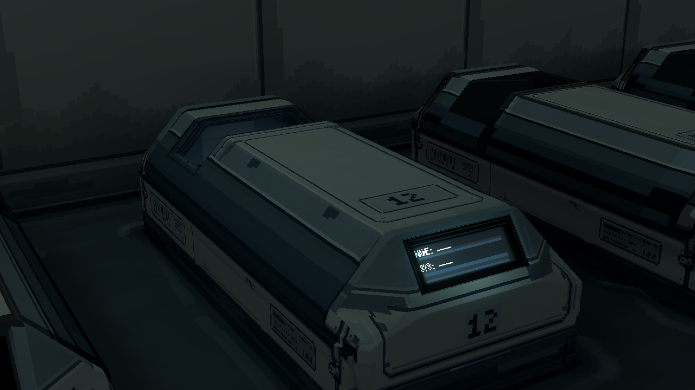
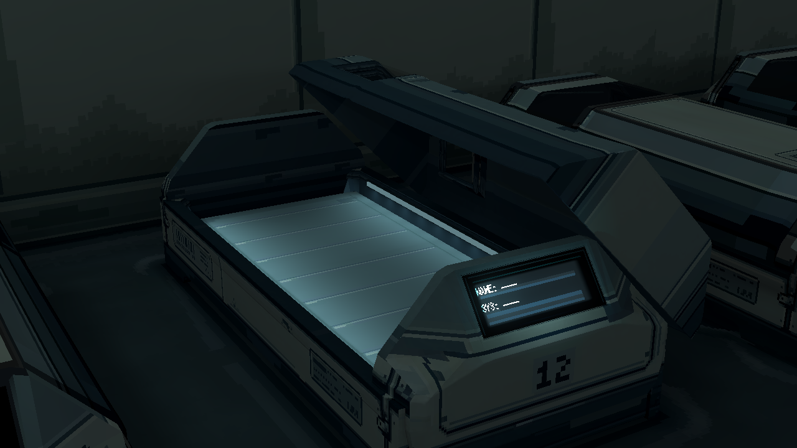
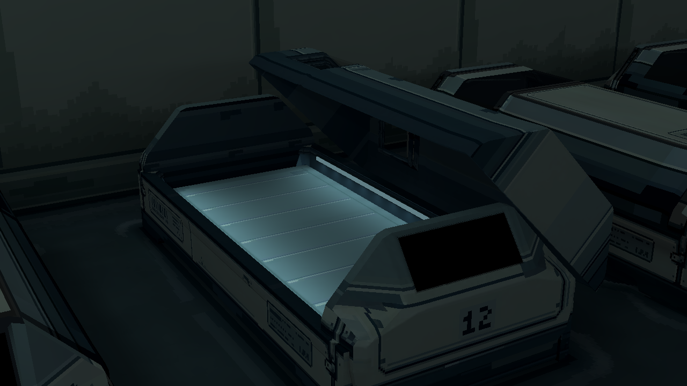
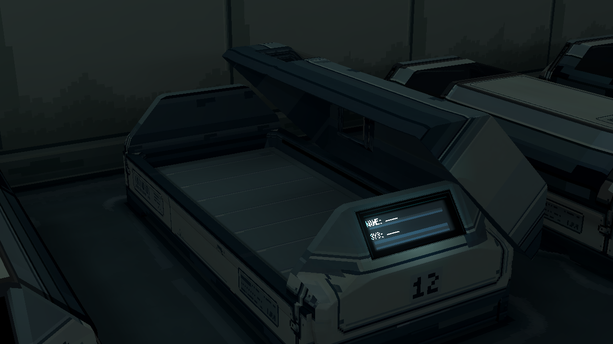
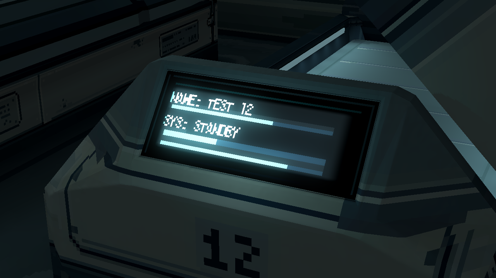
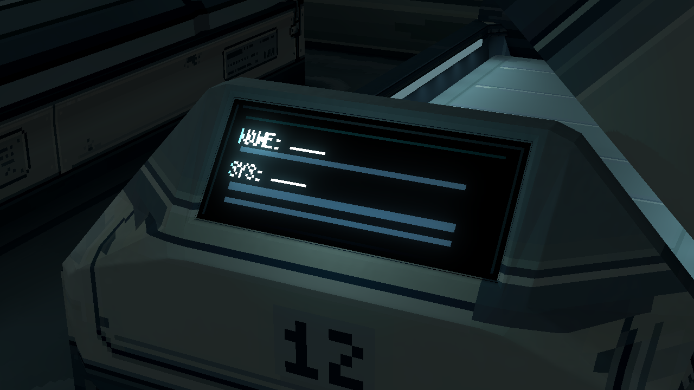
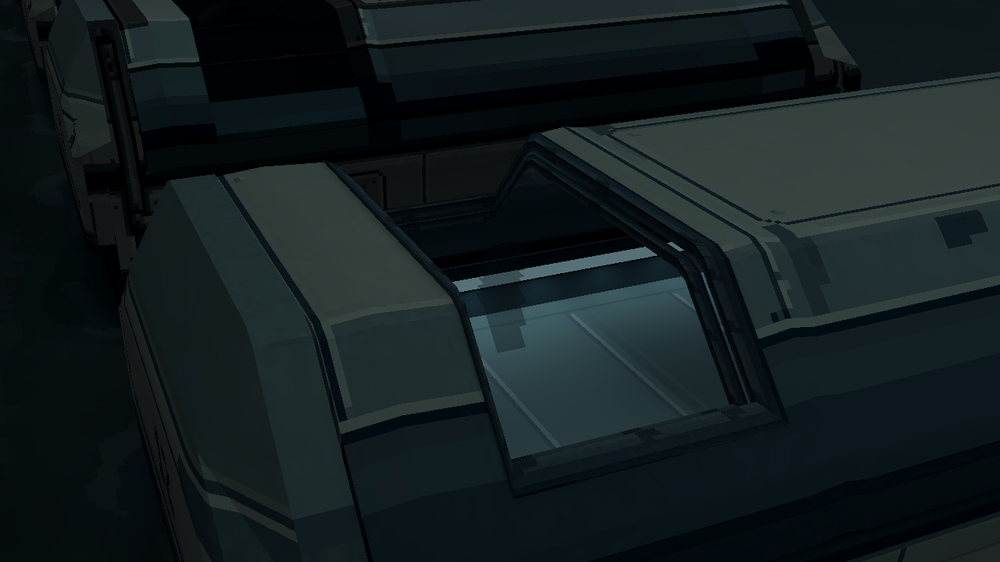
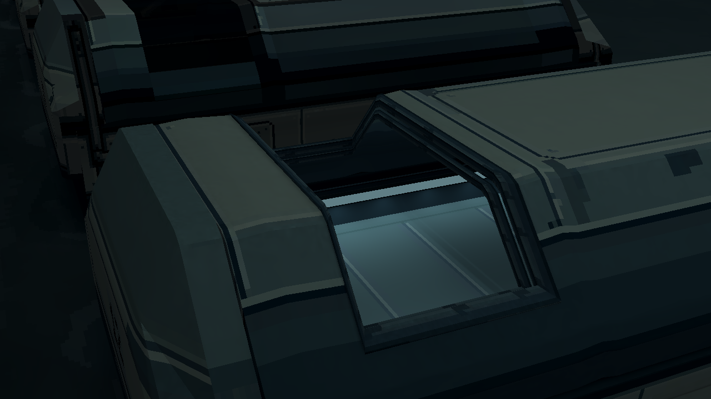
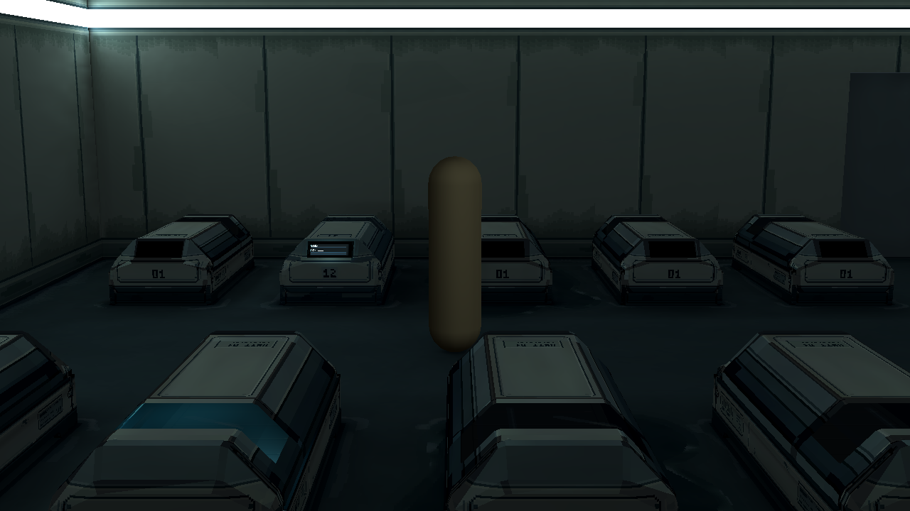

标准休眠舱 v8
双侧灯管已进入统一模型源。一个动画GLB完成先抬升12cm、再侧滑至45°；固定壳、床与活动盖分别有碰撞，屏幕和灯管独立控制。本轮只接入P12。
开盖路径 · 拖动检查
从导入的同一个LidOpen动作采样11帧，可往返查看抬升与侧滑。Godot中运行房间入口，按O可播放带碰撞的真实动作；这里是实际渲染帧的浏览器回放。
0% · 闭合
相同机位 · 闭合 / 打开

闭合 · 同一模型

打开 · 侧灯、玻璃和内部实体保持
独立供电

屏幕关闭，侧灯保持

侧灯关闭，屏幕保持
屏幕数据接口
 默认占位 · 姓名／状态未绑定游戏数据
默认占位 · 姓名／状态未绑定游戏数据

TEST 12 / STANDBY / 三条进度 · 仅技术示例
屏幕底色 · 同机位

近纯黑参考 · 只关闭面板背景底光
当前蓝灰底光 · 文字／进度条参数相同
闭合头窗

原透明玻璃，双侧灯开启

只隐藏玻璃 · 真实内腔仍在
游戏镜头

闭合 · 原FOV，审图站位旁移
打开 · 同一站位
实际Godot截图1280×720，无后期提亮。端点使用P12同一UV2下的两张受光图，途中为近似混合；没有新全室动态GI。其余19舱、主门、人物与主游戏入口不变。编号12为当前样本，未推广到20舱。